Barcelona La Sagrera: A modern-day mega-station
The future of multi-modality and city-building is under construction in the Catalan capital.
The future of multi-modality and city-building is under construction in the Catalan capital.
After our time in France, we made our way to Spain, where we saw a central rail station and “a new urban center” being built from scratch in Barcelona when we visited the construction site of the future La Sagrera Station.
There, we got a presentation and site tour from a few planners of Barcelona Sagrera Alta Velocitat (BSAV), the public commercial company that was created by Spain’s Ministry of Public Works, the Government of Catalonia, and the Barcelona City Council to oversee the station’s planning and construction. Translated to “Barcelona Sagrera High Speed,” BSAV also coordinates the rail and transport improvement projects and urban development related to this station project and occurring in the Sagrera, Sant Martí, and Sant Andreu neighborhoods in northeast Barcelona.
BSAV has a building right next to the construction site, where we got a great presentation from several members who filled us in on this transformational project.
Barcelona needs a new station
Our group’s train from France went through Barcelona-Sants station, the city’s current main central station, and it was immediately clear that Sants isn’t up to being the modern gateway to the city. After going through and touring some of France’s great stations and station neighborhoods, we were pretty underwhelmed with Sants. We arrived on a Wednesday afternoon to a busy and hectic environment. We weren’t packed in like sardines, and it wasn’t too difficult to move about the station, but it wasn’t very comfortable either.
The modern version of the station opened in 1975. After the rapid expansion of Spain’s high-speed rail network since the 1990s, it has struggled to meet the demand of 46 million annual commuters and accommodate new high-speed rail operators. Even though Sants is undergoing its own large-scale renovation, Barcelona needs another station to take on some of its traffic.
But don’t just take my word for it, BSAV and its partners are fully aware of the current capacity issues and the significance of a new station. Our hosts told us they are expecting Sagrera to split the traffic through Sants in half, and forecast 100 million annual passengers eventually. A new large center city station is something Barcelona really needed and, luckily, there was an opportunity for the taking.
The perfect plot of land in the perfect location
Old cities are often landlocked to new large-scale development, unless they want to raze historic parts of their cities at an astronomical price tag. Most historic cities are stuck with the main rail station(s) they’ve got. However, for Barcelona, a 200,000 square meter chunk of land in the northeast part of the city, already connected to other rail lines, was sitting right there for the taking: the site of an old freight rail station.
The railway line that goes through this old freight hub was built in the mid-1800s, and the station was built in 1918-1922. It is one of the largest railway areas in Barcelona, but had been underutilized for many years.
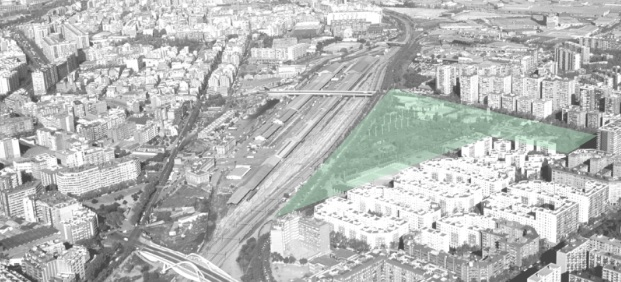
The old La Sagrera freight station site. (Source: BSAV)
Because of the large railway area that cuts through this part of the city, it’s an area that could definitely use a facelift. The surrounding neighborhood is made up of old residential buildings, and the area immediately around that station had lots of scrap yards and slum-like homes. There is very little activity in the neighborhood, something BSAV is hoping to change:
“The construction of the high-speed line and the new Sagrera station represent[s] an opportunity to renovate and recover obsolete industrial areas, large areas dedicated to the railway and infrastructures for energy and sanitation that had been isolated.” — BSAV
The station and station area
The station complex will total 300,000 square meters. The station itself will be mostly underground, while ground level will be the main lobby surrounded by El Parc del Camí Comtal—the large urban park being built with the station. The BSAV website calls this area “connection yard” or “intermodal yard” with access to the Sagrera neighborhood and open urban space.
Going underground into the actual station, there will be four levels—two levels for platforms with a total of 18 railway tracks. The upper level will house high-speed trains and 19-bay intercity bus station. Main access will be from the mountain side, or northwest side from the La Sagrera neighborhood. Here, there will be a large connection lobby for the metro and buses. Departures are will be to the north, arrivals will be on the south side. The two lower levels will be used for commuter rail services, the metro, and parking. Its main access will be from the seaside, or the southeast side from the Sant Martí neighborhood.
Diagram of station levels. (Source: BSAV)
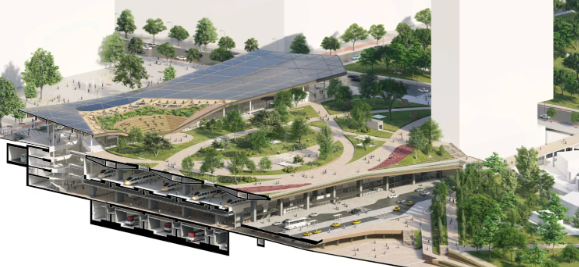
3-D rendering of the station and station area showing different levels. (Source: BSAV)
Here is a clearer breakdown of each level:
-
Sub-level high-speed rail platforms: The first level down will be the platforms for high-speed rail trains with 10 tracks total. BSAV has this level as “semi-underground” and says it will get natural light with easy access to the main lobby on the floor above, as well as another concourse below.
-
Underground concourse: This concourse area is below the high-speed rail tracks and above the platforms and tracks for regional Rodalies trains. This will enable travelers to pass through the station, whether between HSR and Rodalies trains or from one of those services to the metro, local and intercity buses, taxis, and parking.
-
Bottom-level platforms: The lowest level down will be the Rodalies regional train platforms, which will have 8 tracks.
Our presenter from BSAV actually mentioned the San Francisco Salesforce Transit Center, another multi-level station under construction, as a similar comparison. The two station building projects are transformative for their respective cities, both are similar and different in many ways, something I plan to cover in a future article.
Sagrera is the centerpiece of a “new urban center”
The objective is for the new Sagrera station to be bigger than just a major intermodal public transportation hub, but a new central urban district that will drive a socioeconomic revitalization of north Barcelona. Around the station, 10,000 new housing units are to be built—40% of which will be social housing—and office and commercial space for 30,000 new jobs.
Part of BSAV’s plan vision is achieving greater social cohesion by reducing movement between places where people work and live and enable people to live in the same area as where people work and establishing “territorial identity.” They envision doing this by:
-
Planning hotels and offices around the station, for ease of accessibility for commuters and travelers.
-
Housing and local amenities spread throughout the district dispersed throughout the area.
-
Other commercial and tertiary activity clusters concentrated in specific areas.
El Parc del Camí Comtal
Around this grand new station will be a grand new urban park: El Parc de Camí Comtal.
This massive new urban park will be the ground level of the station area and over the railway track approaches 8 km long up to the north. A total of 38 hectares of underground rail and road infrastructure, that connects to the ring road and highway networks, will be buried under the park. This isn’t just any park, it’s a large urban park that is roughly the same length as New York’s Central Park.
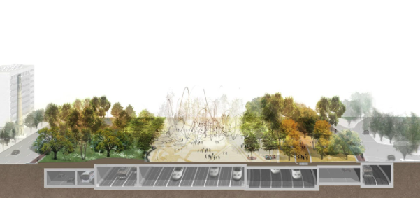
Rendering of rail and road infrastructure under the planned park. (Source: BSAV)
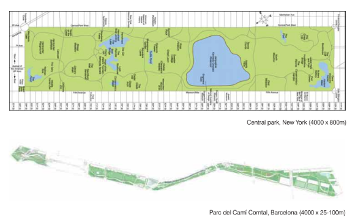
Central Park and the future El Park del Camí Comatal. (Source: BSAV)
Our presenters gave an interesting history on European urban parks and why Barcelona is “park poor.” He said that other European capitals have park spaces from old royal hunting grounds, but Barcelona was not a capital, so it did not build many parks. Today, there were few opportunities, if any, as good as the Sagrera station site and the track right-of-ways to add new park space for the city. Barcelona has taken advantage of a blank canvas, and it's giving 180,000 nearby residents and travelers who pass through a giant new outdoor greenspace to enjoy.
Facilitating comfortable walking and biking within the neighborhood.
The main benefit of the park is that it will connect a historically divided area of Barcelona. Our presenters said that with the station area and the park that they are removing a “historical urban scar” since the railway was first built in the mid-1800s.
Currently, there are just a handful of bridges that connect the Sant Martí and Sagrera neighborhoods over the railway tracks. With the completion of the park, walking between the neighborhoods will be like crossing the street, creating a truly walkable neighborhood. There will also be a two-way cycle paths that runs parallel to the railways the entire length of the park with many connection points to the rest of Barcelona’s cycling network.
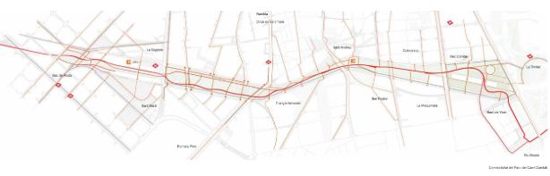
A diagram of the new connectivity with the park. (Source: BSAV)
Sagrera is the centerpiece of the future of multi-modality
Sagrera Station is going to have a massive impact on travel all scales, from local residents to people throughout Spain and Europe.
High-speed rail in Spain and Europe
The expansion of high-speed rail has led to much faster travel to and from Barcelona in all directions. When the line to Madrid opened in 2008, travel time was cut from more than six hours to around three hours. Going north about 101 km (or 63 miles), the city of Girona was once around a 90-minute trip, now its closer to 38 minutes. All the way closer to the French border about 144 km (90 miles), Figueres was once a two-hour trip, now it is 53 minutes.
The La Sagrera Station project is a central piece to all of these railway improvement and expansion initiatives. Because of Barcelona’s "privileged" location, BSAV envisions it will be the main node of the Central Corridor—Madrid-Barcelona-France—and the Mediterranean Corridor, which is planned expansion to the south of Spain and all through southwest Europe along the sea the corridor is named after. BSAV states Barcelona will be the capital of one of Europe’s “macro regions”—”Barce-Lyon.”
“Barcelona’s privileged location will in fact turn it into the capital of a macro region that is beginning to take shape on the map: ‘Barce-Lyon’, one of the 12 macro regions which, according to the experts, will make up the centres of economic, territorial and social power of the future of Europe.” — BSAV
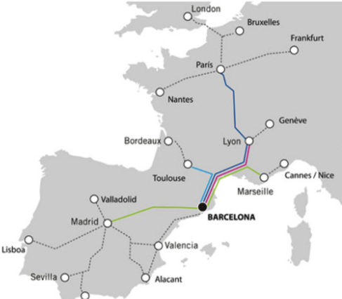
Barcelona as a hub for Western Europe’s high-speed rail network. (Source: BSAV)
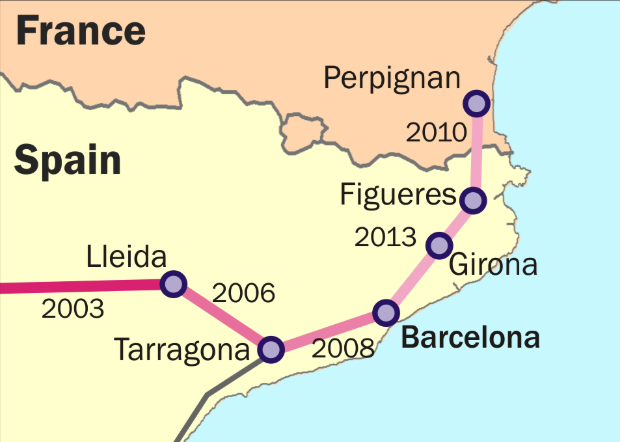
A diagram of different corridors on the Madrid–Barcelona–French lines with the years they opened. (Source: By Classical geographer, accessed via commons.wikimedia.org)
The French and Spanish high-speed rail networks connect right at the La Sagrera Station site; the station is the literal connection point of Europe’s two largest high-speed networks. To the south, the Madrid–Zaragoza–Barcelona high-speed line; to the north, the Perpignan–Barcelona line.
In 2013, the 5.6-km Sants-Sagrera city center tunnel was built and the 131-km-long segment of Barcelona–Figuerescorridor—the segment of the Perpignan line that is in Spain—were both completed and connected at the Sagrera station site. Since then, trains have been able to run from Madrid through Barcelona-Sants to the French high-speed network and some Catalan cities along the way. Since the end of 2024, trains have been passing through the station site, and our train was one of them!
The Sants–Sagrera central city tunnel: Through-running for better connectivity
La Sagrera Station would not be as impactful without the city center tunnel that was built to connect it to Sants. This 5.6-km tunnel runs through the heart of Barcelona, connecting its two main stations from different ends of the city—Sants to the southwest, Sagrera to the northeast.
The BSAV website clearly states all trains will stop at both stations, which opens up new local travel possibilities by providing heavy rail riders with two options for boarding and alighting in completely opposite ends of the city center at hubs with different connections to local transport networks. This is great for local, last-mile travel, as it will be easier to go to and from many new origin and destination points all across the city.
The tunnel has already unlocked national and international connectivity by being a key link between the Madrid corridor and the high-speed line up to France. When Sagrera opens, all high-speed rail travelers arriving or departing from Barcelona will get to choose a station more convenient for them, something not really an option right now.
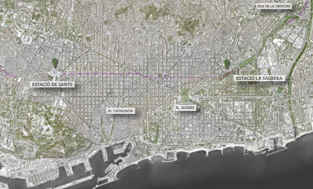
A map of Barcelona with indications of its large rail statons. The Sants–Sagrera city center tunnel indicated by the dashed blue line. (Source: BSAV)
Rodalies de Catalunya rail service
Rodalies de Catalunya is the regional rail service Catalonia, mostly centered around commuter service for Barcelona. There are 17 lines—three variations of R2, totaling 19 different services—that serve about 350,000 people every day over a 290 track miles.
La Sagrera Station will be served by four(ish) lines:
-
R1: A 60-mile route with 31 stops, running from northeast in Macanet-Massanes in the mountains, then goes east close to the coast, then turns south and runs all the way through central Barcelona to just outside the city to the southwest.
-
R2: An 83-mile route with 34 stops that begins in the city of Granollers in the north and also runs through the center of Barcelona to the municipality of Castelldefels to south.
-
R2 Nord (R2N): A variation of R2 that begins at Macanet-Massanes, but it goes directly south, staying inland. It runs on the normal R2 line through the city, but then splits off the mainline and turns south toward the coast to stop at the airport, its southern terminus.
-
R11: A 107-mile line with 28 stops that stretches much further north to the small French coastal city of Cebere, just on the other side of the border. From there, it runs through a dozen cities, including larger cities of Figueres and Girona, to Macanet-Massanes, where it joins R2N and runs on that route until Sants Station, its southern terminus.
These lines come together at the future La Sagrera Station site and share the El Clot-Árago Tunnel with R11 through central Barcelona to Sants Station.
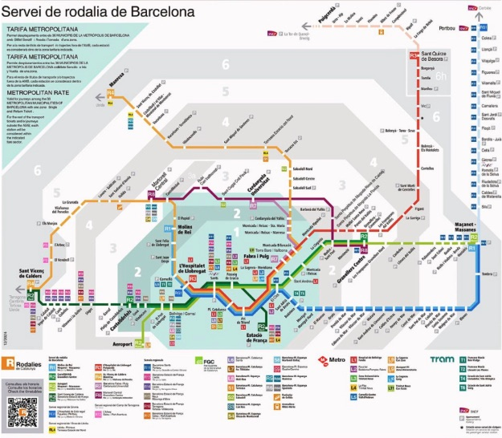
Rodalies de Catalunya map. Look closely at the right side of the map to get a good look at the lines that will run to La Sagrera. (Source: Renfe)
From what I could tell, R1 and R2 are amongst the busiest out of the system’s 21 total services. I could not find a reliable source for post-pandemic ridership data by line, so I do not want to put out any misleading numbers, but I can sort of paint a picture based off of 2016 ridership numbers I was able to find.
In 2016, Rodalies de Catalunya served 117 million passengers total. R2 carried the most passengers with a ridership of 33.6 million riders, and R1 was the third-highest at 28 million. In 2024, Renfe served 127.4 million passengers on Rodalies de Catalunya. So, ridership has more than rebounded since the pandemic, and I don’t think it’s incorrect to suggest that the ridership on these lines is a little bit higher than those numbers in 2016.
La Sagrera will be a massive hub for Roadalies rail travelers as well. Plus, with R2N connecting to the airport, which also further enhances national and international travel connectivity through La Sagrera, someone arriving in Barcelona on a plane is just one transfer away from a regional train away to a high-speed train.
Connections to local transport networks
The station is expected to serve 100 million annual passengers per year across all these modes. I could not find a breakdown of the projected mode split for the 100 million estimate, so I provided one based on an older estimate of 92 million passengers per year to give an idea of how the station will be used:
-
22.5 million for HSR
-
30 million for regional trains
-
15 million for metro
-
12.2 million for road transit; buses and private car
The high-speed rail and the Roadlies de Catalunya lines mentioned before that will soon stop at La Sagrera currently run into Sants station, which connects to Metro L3 and L5 along with a handful of bus lines. R2, R2N, and R11 also stop at the rebuilt Sant Andreu station a couple of miles to the north of La Sagrera, which is close to a Metro L1 stop, but it’s not necessarily an interchange point.
New expansions of the local transit network are taking place alongside the construction of La Sagrera to fully maximize its potential as a multi-modal hub.
Metro connections
La Sagrera will be served by three Barcelona Metro lines that are being expanded and adding stops on their existing routes.
Metro L4 is a funky, loop-like line within the city. It begins at La Pau, which is just east of the Sagrera station site, it goes down south through the city center, close to the coastline, turns inland (west), then back up north, running to its terminus at Trinitat Nova, northwest of La Sagrera.
For the Sagrera station project, L4 will be extended 3 stops west from the La Pau stop. The second extended stop will be at La Sagrera station, and then going one more stop to the La Sagrera-Meridia Station, which connects to R3 and R4 Rodalies services.
The other two lines that will connect to Sagrera are L9 and L10, though they will be interlined into their shared trunk line in this part of the city, so it will be one station. The L9/L10 expansion is one of Barcelona’s highly-touted transport projects in recent years, and has been subject to acclaim for its unique tunneling and station building methods in an attempt to save on costs. However, like the Sagrera station project, it has run into a series of construction and financial issues since work began in the 2000s, which were exacerbated by the 2008 financial crisis.
These two lines are currently open in the northern and southern parts of the city, operating as short lines in two separate segments as work continues on fully connecting them through the city center. There is already a La Sagrera station on the northern part of the line that connect to two other metro lines there. When the La Sagrera station is complete, it will be the La Sagrera-TAV Metro station.
The L4 and L9/L10 stations will run parallel to each other and share the same main access lobby to and from the rest of the La Sagrera complex.
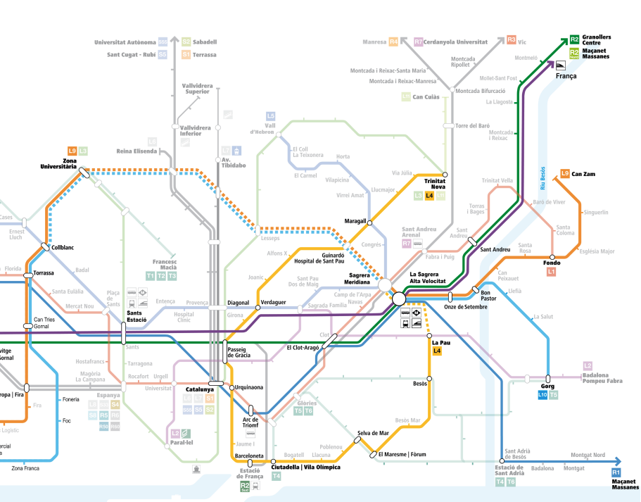
Diagram showing Metro and Rodalies lines stopping at the future La Sagrera Station, indicating future extensions of L4 and L9/L10. (Source: BSAV)
Road connections
What I find so brilliant about the motor vehicle access in the design in and around La Sagrera is how connections to local roads, ring roads, and expressways will be “plugged into” the station through underground tunnels to and from the station. While there will be car and bus access on both sides of the station, motor vehicles will, for the most part, be out of the way and not disrupt the urban fabric or pedestrian comfort in the area.
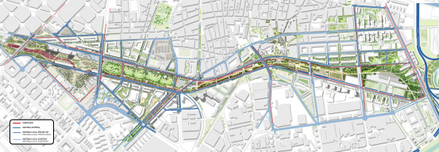
Road connectivity to and from La Sagrera Station. (Source: BSAV)
The connection to ring roads and other roadways outside of Barcelona will provide easy access for local and intercity bus routes entering and leaving La Sagrera’s new 19-bay bus station, which will handle 480 intercity departures per day.
There will be a few vehicle lanes on the San Martí side of the station. However, if you look closely at the diagram below, there are multiple access points to the main concourse between high-speed rail and Rodalies train tracks for pedestrians. They are not required to cross a busy airport drop-off like a madhouse. While there is still good vehicle access to that side of the station, it does not dominate the space and its kind of on it own level. On the La Sagrera side of the station, there’s a tunnel for vehicles indicated by the label “G” that’s also easily accessible from the main concourse area. For those who wish to drive and park at the station, there will be two bilevel parking lots, one on each side of the station, to hold 2,500 vehicles.
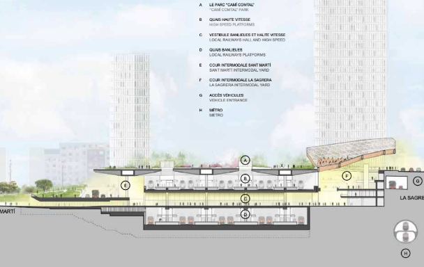
Station diagram showing different levels and areas with labels. (Source: BSAV)
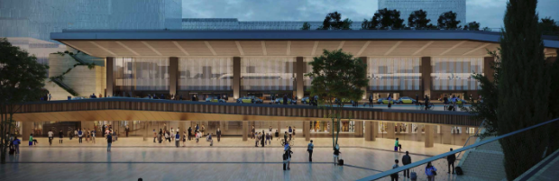
Rendering of entrance to station on the San Martí side of the staton. A level for motor vehicles, allowing close pick-up and drop-off access, separate from pedestrian access. (Source: BSAV)
The future of city building and multi-modality
In Lyon, my work-study group visited an existing station and central urban district getting a major facelift. It is an extremely impressive initiative and multi-faceted mega-project. I bring this up not to compare it to the La Sagrera project, but put into perspective what Barcelona is building here:
A new city center district—with jobs, housing and lodging, and other activities—with a brand new main city center railway station almost from scratch.
Taking a desolate and underdeveloped part of the city, seeing an opportunity, and making it happen is really inspiring. There are so many areas like the La Sagrera neighborhood, whether an abandoned freight station or another undeveloped post-industrial site, in parts of our many once-great U.S. cities that have been hollowed out. We could transform these cities, their metro areas, and entire regions if we looked at those places as opportunities with the same vision, creativity, and ambition as Barcelona sees for La Sagrera.